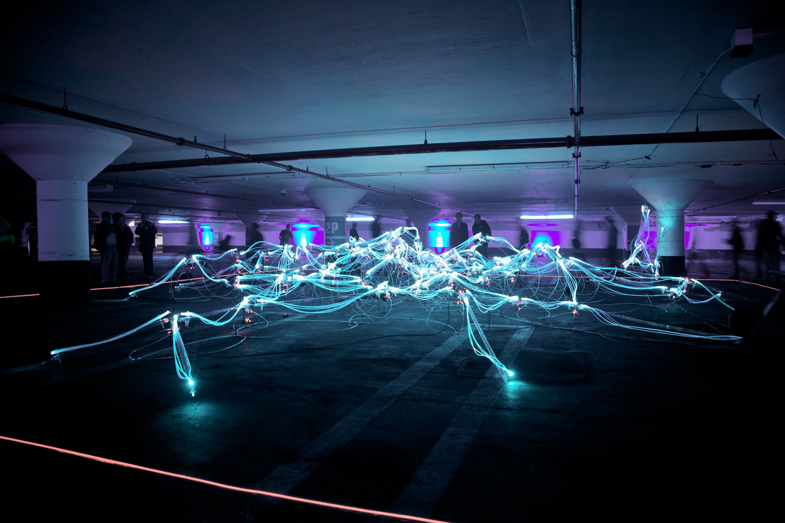

Things I Like
This is planned as a living document to track thoughts on desktop Linux and my personal thoughts on digital minimalism and organization. I’ve organized it into things that I like and things that I don’t like.
Symlinks for /usr and /boot
In Debian, several directories under the root / directory are symlinked to their counterparts in the /usr/ directory. As far as I know, the primary reason behind the similar directory structure of / and /usr/ is due to a past incentive to reduce the size of the root partition (I think my source on this is the book How Linux Works).
FreeDesktop Specs
The FreeDesktop specifications are a boon to desktop Linux. AKA Cross-Desktop Group (XDG) specs, one of the most useful specs is the basedir spec, which defines standard environment variables for common file locations and paths, e.g., XDG_CONFIG_HOME.
I like a clean home directory. Applications should respect the $XDG_CONFIG_HOME and $XDG_DATA_HOME environment variables rather than littering the user’s home directory with configuration and data files respectively. This has higher aims than aesthetics; having well-standardized directories makes it possible to build higher-level backup and provisioning tools.
There is an excellent Arch wiki page here which tracks software support for the above environment variables. If an application you use does not respect these environment variables, consider creating an issue within the relevant VCS for the offending project.
Digital Minimalism, Fewer Devices
Fewer devices make me happier. In the words of Terry A. Davis:
“An idiot admires complexity, a genius admires simplicity”.
It’s easier to reason about a state machine with n components compared to n+1 components, all components being equally complex. Further, while studying the Ethereum beacon spec for the Bellatrix release, I came across a reference to Gall’s law:
Gall’s Law states that all complex systems that work evolved from simpler systems that worked. If you want to build a complex system that works, build a simpler system first, and then improve it over time. - Josh Kaufman
The simpler a system, the easier it is to understand in depth and the more utility it provides. I can always add complexity but complexity should be added dynamically as need be, not preemptively. Owning more hardware increases the probability of experiencing hardware failure. Running more lines of code increases the probability of introducing bugs and instability. We’re all up against the law of large numbers and n continues its march towards infinity.
Digital minimalism for me is about striking a balance between the utility of my technology and the time and effort that I spend to maintain it. The less time I spend on technical problems, the more time I have to spend with the people I care about.
Dotfiles in VCS
I never understood the benefits of keeping my dotfiles in source control until I started doing it as part of my init repo. The main drawback is additional complexity. You have to maintain the contents of the repo, authoring commits whenever you make substantial changes to your setup. The source of truth for your settings is no longer your machine. This also means that you have to be diligent about maintaining any related VCS repos whenever you subtantially change your local setup.
Further, if the point of keeping dotfiles and scripts in a VCS is so that you can access it anywhere, thought should also be given to git mirrors and ensuring the availability of your repositories.
The benefit is that, if done well, you can access your most important desktop settings from anywhere in the world.
Syncthing
I really like Syncthing. I was originally skeptical of its utility; it adds a non-negligible amount of complexity to my tech setup. But it has proven to be a versatile and well-written tool.
My primary use case of Syncthing is as a password manager used alongside KeepassXC. KeepassXC works incredibly well for local password storage. The biggest drawback of KeepassXC is that it does not (by default) replicate passwords between devices. Syncthing fills in this gap. I have (at least) two KeepassXC databases: one for critical passwords and one for mobile account passwords.
Mobile App Authentication
When traveling, I commonly need access to accounts for airlines, credit cards, and ridesharing apps. Apps are usually pretty good at keeping users signed in, AFAIK accomplishing this through long-lived session tokens stored on the user’s device. But I don’t like to rely on this. Apps update, apps crash, cached app data gets cleared, and users are prompted to sign in again. For financial apps in particular, I’ve noticed that I’m often prompted for a fingerprint or other form of temporary re-authentication. Failing these prompts tends to make these apps fallback to a password prompt.
These issues are exacerbated by (in my opinion) an overreliance on SMS-based authentication. If I don’t have cell signal for any reason (living somewhere remote, flying in an airplane, or living in a country without service for my carrier), I can’t access mobile accounts which strictly require SMS-based auth. If I can ensure that my most important mobile accounts have password authentication enabled and that those passwords are accessible and up-to-date (via KeepassXC and Syncthing), I can ensure that I have access to my mobile apps when I need it.
Syncing Phone Passwords
With my current setup, my mobile account passwords are stored in a KeepassXC database that gets mirrored by Syncthing between my laptop and my phone. So long as I have access to either device, I have access to my passwords. If I update my mobile passwords on either device, any changes are automatically propogated to all devices. This is particularly useful as some passwords are for websites (e.g., for financial sites) that I access on both devices.
Syncing Phone Pictures
Beyond syncing passwords, I have Syncthing configured to automatically sync pictures from my phone to my laptop. This exists as a quick and dirty backup. If my phone falls into a river, I still have my pictures. I’ve heard it said that Syncthing folders are not proper backups. I disagree. In the situation just described, my laptop is acting as a backup to my phone. This does have potential limitations; corruption of data on my phone could affect the integrity of synced files on my laptop. But I’m still backing up the data. I think the attempt to distinguish between “syncing” and “backing up” is linguistic frivolity that negatively limits wider adoption of Syncthing as a backup solution. If it works, it works.
Syncthing Documentation
Syncthing is well-documented. I recommend playing around with Syncthing’s web GUI a bit. Once you have some intuition about how Syncthing works, check out the Block Exchange Protocol (BEP) spec.
Programming Project Naming Schemes
I tend to tinker with multiple different programming languages. I often find that the best way to familiarize myself with some new technology is to write a toy app or proof-of-concept on my local machine. The majority of these apps don’t end up getting published to source control sites like GitHub, for a few reasons:
- They’re not important in and of themselves
- Showing your work and learning processes is important
- But publishing every draft and toy project amounts to clutter
- They are personal/private projects
- I don’t think they’ll have public appeal
- I don’t care about them enough to replicate them
The result is that I end up with a lot of directories on my laptop. I’ve thus developed a simple naming scheme for programming projects, adopted from conventions I’ve seen online, specifically within the Go community (although I’ve seen it within other communities as well). It’s simple; I prefix the name of a top-level project directory with an abbreviated name of the technology used.
Some examples:
- If I wrote an HTTP server in C, I’d use the prefix
c-. - For SDL code on my GitHub, I use the prefix
sdl-. - For projects using Node.js, I use the prefix
node-. - For projects written in Go, I use the prefix
go-.
The result is that I can quickly disambiguate between different projects. I can also quickly see what programming languages I was writing in at what times based on the directory modification timestamps. It also helps discoverability for others; if I do publish a project, the prefix acts as a hint for people searching for software specific to the advertised prefix.
Some more example prefixes and tech used:
ems-: projects using emscripten/WebAssemblygo-: projects written in Gopy-: projects written in Python (Python3)js-: projects written in plain old JavaScriptreact-: projects using Reactnext-: projects using Next.jssdl-: projects using SDL2, written in C++
I try to be descriptive as to the primary technology used.
Note that these don’t always follow programming languages directly.
I often disambiguate by runtime, library, and framework name, as with node-, react-, and next-.
They all use JavaScript but have different prefixes.
I think the authors of programming languages, runtimes, libraries, and frameworks
should advertise a prefix for use by projects which leverage these technologies.
The ecosystem around the Go programming language is a great example of this.
Consider the name of the popular go-ethereum project.